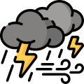
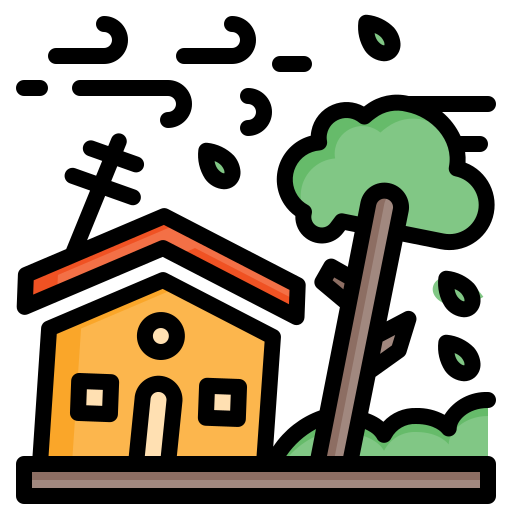

What to do in
case of a Typhoon!

What is a Typhoon?
(Ano ang bagyo at paano ito nabubuo?)

Signs of approaching Typhoon
(Mga palatandaan ng paparating na Bagyo)

Before a Typhoon
(Mga dapat gawin bago ang bagyo)

During a Typhoon
(Mga safety tips habang may bagyo)

After a Typhoon
(Mga dapat gawin pagkatapos ng bagyo)